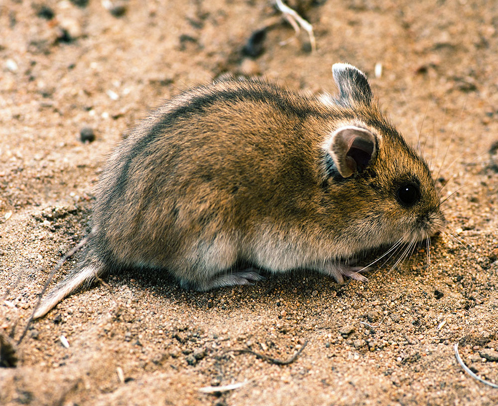

Китайский хомяки
Китайский хомяк (лат. Cricetulus griseus или лат. Cricetulus barabensis griseus) — грызун из рода Cricetulus подсемейства Cricetidae, относящийся к группе видов Cricetulus barabensis. Этот вид обитает в пустынях северного Китая.
Внешний вид
Длина тела китайских хомячков составляет 82–127 мм, длина хвоста — 20–33 мм. Новорожденные весят всего 1,7 грамма, вес взрослых достигает 30–45 граммов. У самцов довольно большая мошонка по сравнению с размером их тела. По сравнению с хомяками из других родов подсемейства Cricetidae, большинство из которых имеют имеют скорее компактное тело, пропорции тела китайских хомячков кажутся стройными, и у них по сравнению с хомяками из других родов относительно более длинный хвост. В среднем в неволе они живут от двух до трёх лет.
Дикий окрас коричневато-серый с тёмной полоской по позвоночнику, чёрными и серыми клещами и беловатым брюшком. Такая окраска в сочетании с их гибким телосложением и более длинным хвостом заставляет их выглядеть «мышеподобными» по сравнению с золотистыми и джунгарскими хомячками.

Среда обитания
В дикой природе китайских хомяков можно встретить в Северном Китае и Монголии. Это довольно редкие домашние питомцы, так как процесс разведения у них сложнее, чем у других домашних грызунов.
Как ухаживать за китайскими хомяками дома?
Вернуться на главную страницу